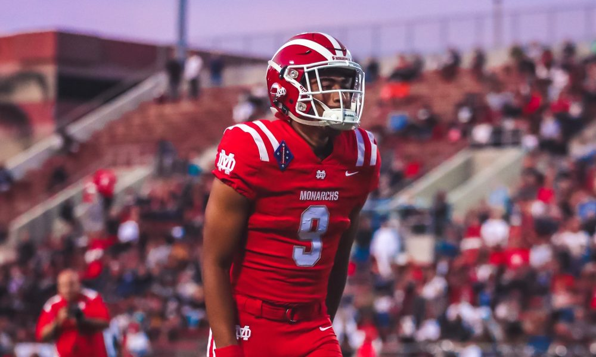

<DOCTYPE!>
<HTML>
  <body style="background-color:#900C3F;"><div id = "text" style = "color: silver;">
  <h1>Bryce Young</h1>
  
  
  <br/>
  <a><b>Attends Mater Dei in Santta Ana, CA</a></<b><br/>
  <a><b>⭐⭐⭐⭐⭐</b></a><br/><a><b>#1 Nationally ranked Dual-Threat QB / #21 Overall</b></a><br/>
  <a>5-11 185 Lbs<a/><br/>
  <br/>
  <br/>
  <a><b>Bryce Young doesn't have the biggest frame for a Quarterback, but he makes the most of it.
    He can throw just as well on the run and out of the pocket as he can in the pocket.
    He can escape pressure exceptionally well and will gain many yards on the ground per carry if he feels like he needs to go.
    He is very smart and can read a play book well.  Compared to Russell Wilson (247 Sports).  Leaves one perrenial powerehouse in Mater Dei to join another one in Alabama.<b/></br>
      <br/>
<iframe width="560" height="315" src="https://www.youtube.com/embed/YA4svPdzFeU" frameborder="0" allow="accelerometer; autoplay; encrypted-media; gyroscope; picture-in-picture" allowfullscreen></iframe>
  <h1>Bryce Young can move aginst the best of competition.</h1>
<iframe width="560" height="315" src="https://www.youtube.com/embed/TrS2Wp2XpeA?start=16" frameborder="0" allow="accelerometer; autoplay; encrypted-media; gyroscope; picture-in-picture" allowfullscreen></iframe>
<br/>
<br/>
  <a><b>Bryce is committed to The University of Alabama<br/></a></b>
  <br/>
  
